2단계, 메인 전체
같은 갈래끼리 메인 나란히
왼쪽부터 테스트 3, 테스트 4, 테스트 5(이번). 그림을 누르면 그 메인이 열리고, 아래 글자를 누르면 스크롤 전체를 한 장으로 봅니다.
① 고퀄리티 한국식
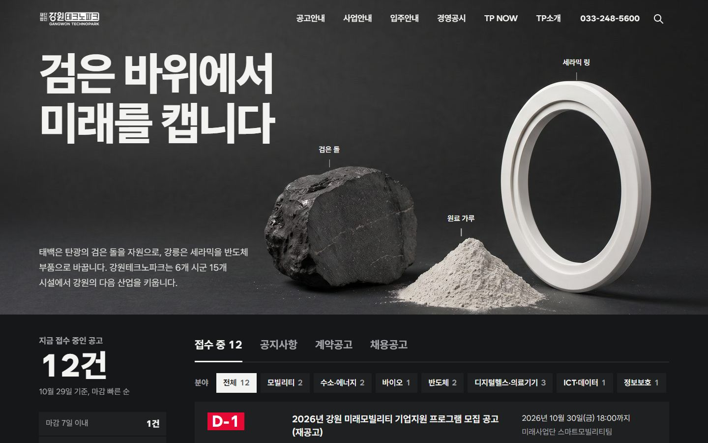
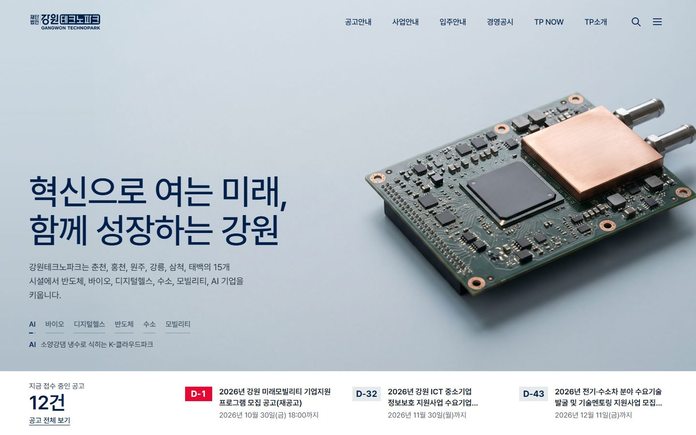
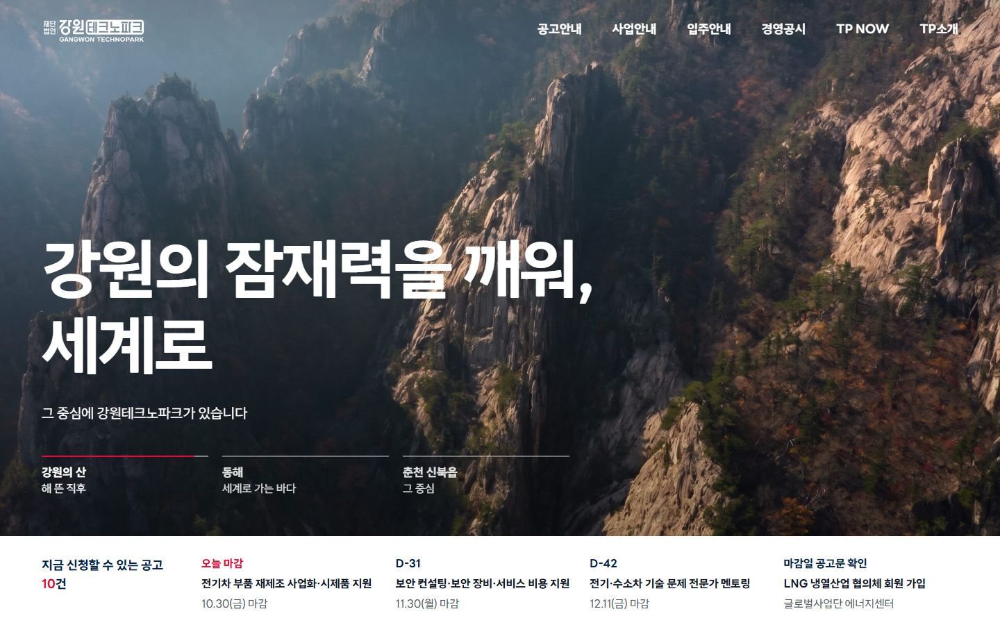
② 독창형
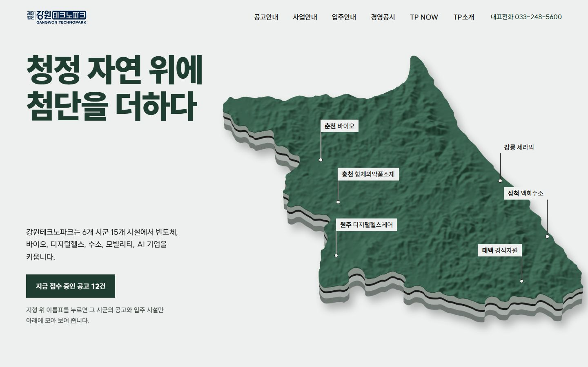
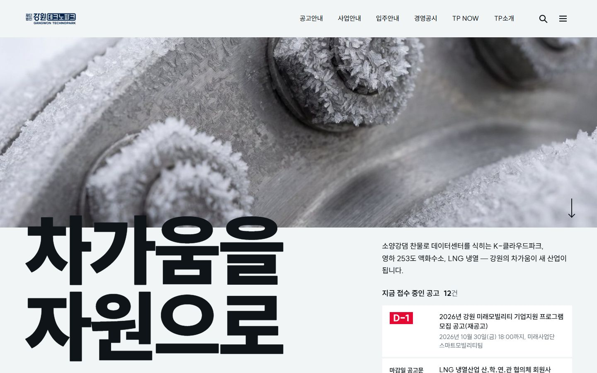
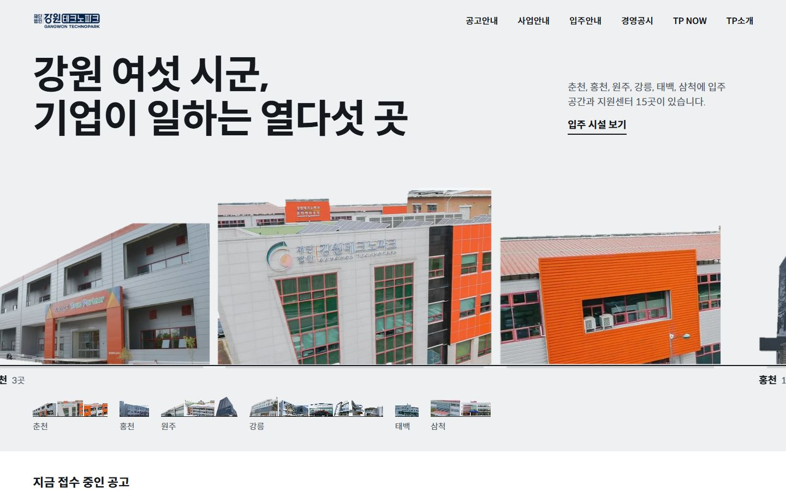
③ 실용형
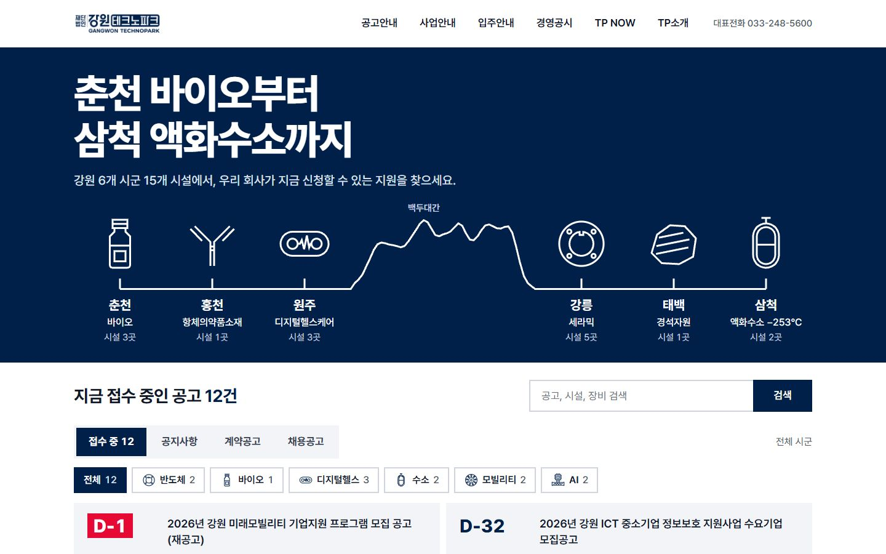
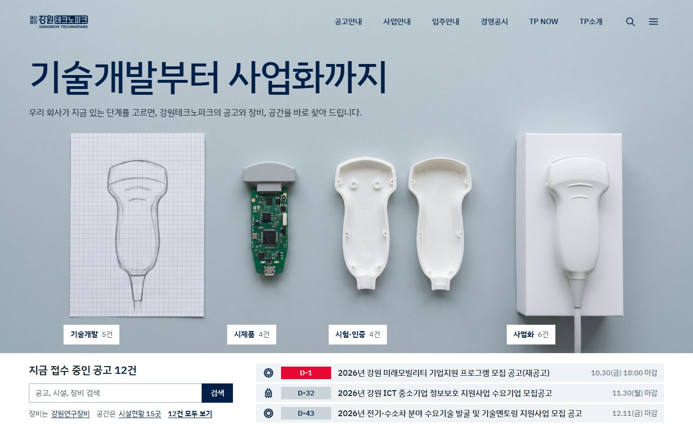
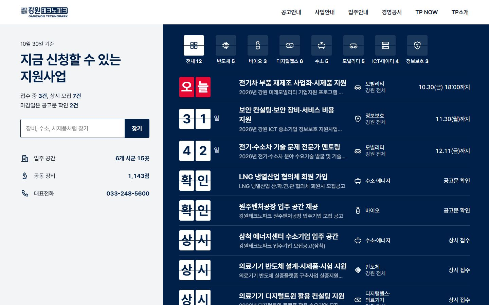
한눈에
테스트 3·4·5 첫 화면 나란히


1. 몰입 노트
그리기 전에 강원TP를 판 기록
본 것
- 홈페이지 전체 메뉴
- 대메뉴 6개, 하위 메뉴 30개(공고안내 5, 사업안내 3, 입주안내 3, 경영공시 7, TP NOW 5, TP소개 7). 인사말·비전·일반현황·지역사업안내·시설현황 원문을 읽음.
- 홍보영상 2편
- 2026년 영상(3분 36초)을 3초마다 끊어 73장, 자막 88컷으로 읽음. 2023년 영상은 단지 항공 장면 위주.
- 보도자료
- TP NOW > 언론보도 최근 10건(10/27 미래차 부품 재제조, 10/22 바이오·마이크로바이옴, 10/13 5극 3특 초광역 협력, 10/13 미래모빌리티 인프라, 10/07 스마트공장 DX 교육 등).
- 공고
- 공고 45건(공지 고정 15건)과 공고문에서 옮겨 둔 마감일, 지역, 분야 데이터. 10/29 홈 목록(공지, 모집, 계약, 채용 각 5건).
- 시설 사진
- 시설현황 15곳(6개 시군) 사진과 층별 구성, 홍보영상 속 단지 항공 장면 12장.
- 비슷한 기관 3곳
- 경기테크노파크, 충북테크노파크, 대구테크노파크 첫 화면(1440). 해외 1곳(하이테크캠퍼스 에인트호번)은 접속 제한(429)으로 못 열어 뺌.
숫자로 본 강원TP
- 2003.12.22
- 설립일(홍보영상 0:25)
- 4단 2실 1부설기관 21팀
- 조직(홍보영상 0:25)
- 6개 시군 15곳
- 입주안내 > 시설현황(춘천 3, 강릉 5, 원주 3, 삼척 2, 태백 1, 홍천 1)
- 7대 미래산업
- 바이오헬스, 수소에너지, 반도체, 기후테크, 방위산업, 푸드테크, 미래모빌리티(홍보영상 0:43)
- 45건
- 공고(공지 고정 15건) — 10/29 기준 접수 중 3건, 상시 7건
- 033-248-5600
- 대표전화(바닥글)
강원TP가 스스로 하는 말
- “거친 땅과 검은 바위 속에서 우리는 희망을 캐내고”2026 홍보영상 0:01
- “지역 산업의 거점, 강원테크노파크”2026 홍보영상 1:43
- “강원의 잠재력을 깨워, 세계로 뻗어가는 길”2026 홍보영상 2:43
- “그 중심에 강원테크노파크가 있습니다”2026 홍보영상 2:46
- “NEW 강원테크노파크가 강원특별자치시대의 문을 활짝 열겠습니다!”2026 홍보영상 3:31
- “혁신으로 여는 미래, 함께 성장하는 강원”TP소개 > 인사말(이사장) 제목
- “청정 자연이라는 고유한 자산 위에 첨단산업을 더해, 기업이 마음껏 혁신하고 청년이 강원에서 꿈을 펼치는 산업 생태계”TP소개 > 인사말(이사장)
- “기술개발부터 사업화, 인재 양성, 생태계 조성까지 기업 성장의 전 주기를 밀착 지원”TP소개 > 인사말(이사장)
- “강원특별자치도 혁신성장을 선도합니다. 행동하는 KEY PLAYER, NEW GWTP”지금 홈페이지 첫 화면

지금 홈페이지에서 걸리는 것
- 첫 화면 왼쪽 절반을 행사 포스터 팝업이 덮는다.
- 첫 문구 'KEY PLAYER, NEW GWTP'와 반도체 칩 그림은 다른 TP에 붙여도 맞는다 — 강원이 안 보인다.
- 공고 목록에 마감일 칸이 없다. 고정 공고 15건 중 11건은 본문이 그림이라 내용이 글자로 안 읽힌다.
- '모집중' 표시가 마감 지난 공고에도 남아 있다(2026-64호, 4/28 마감).
- 지역·분야로 거를 수 없다 — 원주 의료기기 회사가 자기 공고를 찾으려면 45건을 다 열어야 한다.
지금 첫 화면

비슷한 기관 3곳


세 곳 모두 배너 슬라이드 + 공고 탭 + 아이콘 격자 + 팝업이라 같은 틀이다. 강원TP가 달라 보일 자리는 둘뿐이다 — 강원 땅과 거점(다른 곳엔 없는 것), 그리고 지금 신청할 수 있는 공고(모두가 찾으러 오는 것).
갈래별 한 줄 믿음 (이 노트에서 뽑음)
① 고퀄리티 한국식
강원TP는 강원 땅 전체를 산업으로 깨우는 중심이다.
근거: '강원의 잠재력을 깨워, 세계로 뻗어가는 길'(영상 2:43), '그 중심에 강원테크노파크가 있습니다'(영상 2:46) — 영상이 끝을 향하며 고른 말.
② 독창형
강원TP의 정체는 배너가 아니라 강원 곳곳에 기업이 들어가 일하는 건물들이다.
근거: 시설현황 6개 시군 15곳, '강원 지역 6개 거점, 기업 성장지원을 위한 인프라 조성'(영상 1:03) — 다른 TP 세 곳 첫 화면엔 건물이 없다.
③ 실용형
이 홈페이지에 오는 기업의 첫 질문은 '지금 내가 신청할 수 있는 게 뭐냐'다.
근거: 공고 45건인데 목록에 마감일 칸이 없고 11건은 본문이 그림, 충북TP는 공고 날짜를 크게 쓴다, '기업 성장의 전 주기를 밀착 지원'(이사장).
2. 먼 방향 10개에서 3개로
서로 크게 다른 첫 화면 10개를 흑백으로 거칠게

| 방향 | 한 줄 | 그림 | 고른 이유 / 뺀 이유 |
|---|---|---|---|
| 1. 땅의 단면 | 검은 땅에서 첨단으로 | 지층 단면 띠(탄층 → 세라믹 → 수소) | 뺌 — 테스트 3 ①(검은 돌 → 세라믹)과 같은 이야기 |
| 2. 여섯 거점 지도 | 강원 여섯 곳의 거점 | 강원 윤곽 위 거점 6개 | 뺌 — 테스트 3 ③(남색 위 흰 선 6거점)과 같은 그림 |
| 3. 사물 일곱 | 강원의 일곱 가지 미래산업 | 7대 미래산업 사물 정물 | 뺌 — 테스트 4 ①(사업 사물 6장)과 같은 수단 |
| 4. 출발 안내판 | 지금 신청할 수 있는 지원사업 | 마감 순으로 선 공고 판이 곧 첫 화면 | ③ 실용형으로 고름 — 몰입에서 찾은 가장 큰 불편(마감일 없음·그림 본문·거르기 없음)을 첫 화면이 바로 푼다 |
| 5. 문장으로 찾기 | 나는 [원주]에서 [의료기기]를 만듭니다 | 빈칸 문장 검색 | 뺌 — #1457 1안·3방향 실험 3안이 이미 씀 |
| 6. '강원' 두 글자 | 강원 | 초대형 두 글자 속 실사 | 뺌 — 어느 강원 기관에도 맞는 포스터, 강원TP만의 것이 아님 |
| 7. 열다섯 채 | 강원 여섯 도시, 기업이 일하는 열다섯 채 (다시 그리며 '여섯 시군, 열다섯 곳'으로 고침 — 홍천은 군, 원주 OpenLAB은 건물 한 채가 아님) | 시설 15곳을 오려 한 줄 거리로(에드 루샤 1966) | ② 독창형으로 고름 — 어느 TP도 안 하는 그림이고 실제 건물이라 지어낸 것이 없다 |
| 8. 완전정밀분해 | 하나를 끝까지 뜯어 봅니다 | 미래차 부품 분해도 | 뺌 — 10/27 보도자료 한 분야(미래차)만 말한다 |
| 9. 2003 → 2026 | 2003년부터 오늘 공고까지 | 연표 띠 | 뺌 — 첫 화면에서 할 일이 없다(정보 위계 약함) |
| 10. 그 중심 | 강원의 잠재력을 깨워, 세계로 | 화면 가득 강원 실제 장면 + 큰 두 줄 | ① 고퀄리티 한국식으로 고름 — 한국 대기업 에이전시 문법(화면 가득 실사·왼쪽 아래 큰 두 줄·장면 진행)에 가장 맞고, 영상 원문이 바로 한 줄이 된다 |


① 고퀄리티 한국식 — 깨어나는 강원
강원의 잠재력을 깨워, 세계로
강원TP는 '강원 땅 전체를 산업으로 깨우는 중심'이다 — 산과 바다에서 시작해 춘천의 거점으로 모이는 장면을 영화처럼 보여 준다.
- “강원의 잠재력을 깨워, 세계로 뻗어가는 길”2026 홍보영상 2분 42초 자막
- “그 중심에 강원테크노파크가 있습니다”2026 홍보영상 2분 45초 자막(춘천 신북읍 항공 장면)
- “강원 지역 6개 거점, 기업 성장지원을 위한 인프라 조성”2026 홍보영상 1분 2초 자막
최종 첫 화면
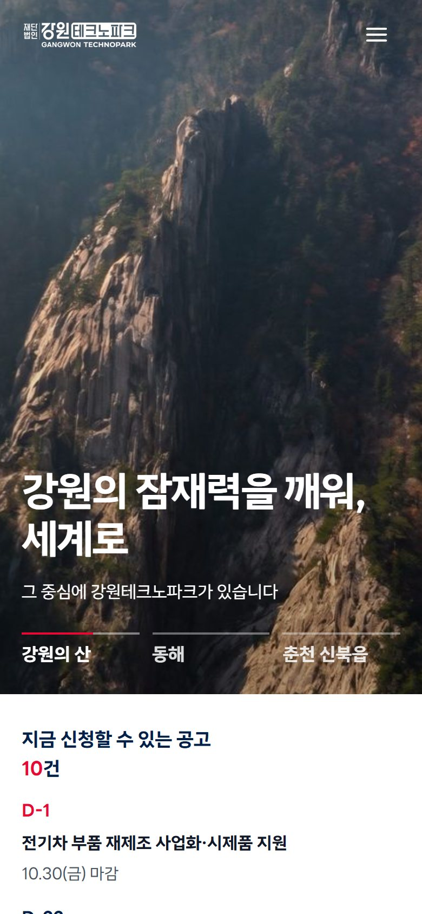
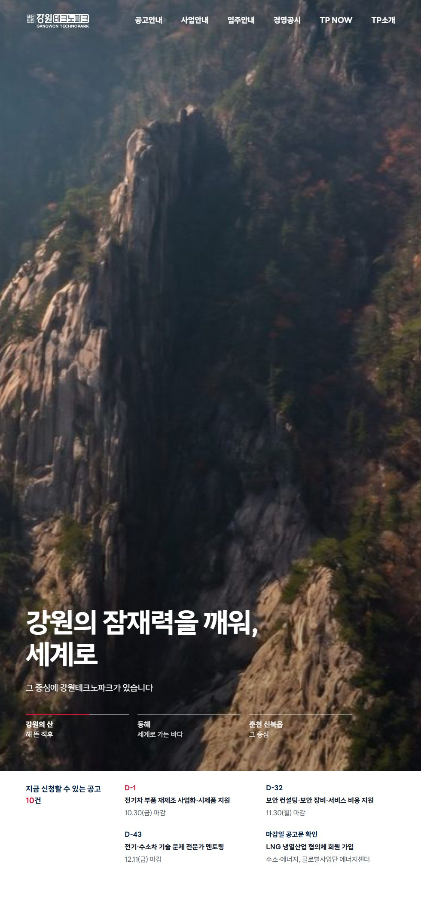
다시 그리기 6번
캡처는 그 버전을 그린 때 화면 그대로입니다. 왼쪽 PC 1440, 오른쪽 폰 390.
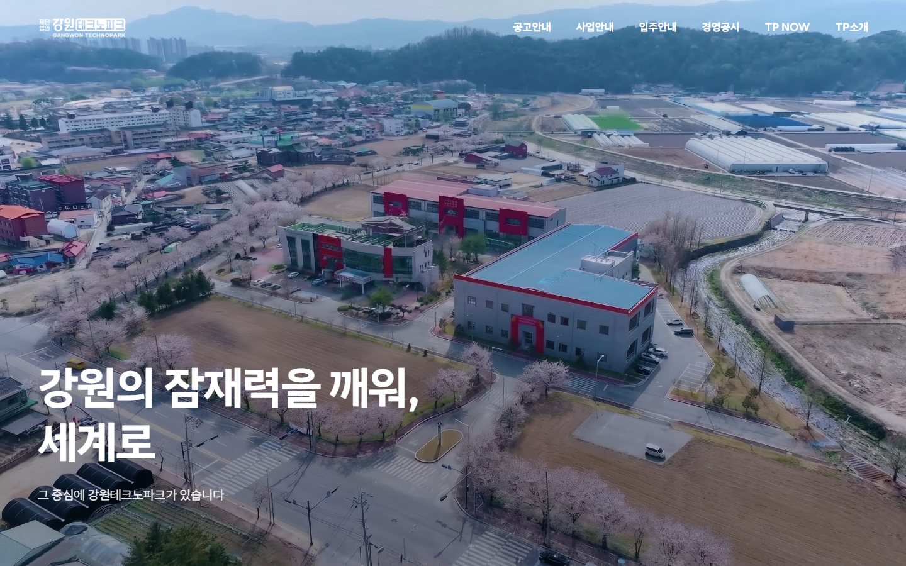
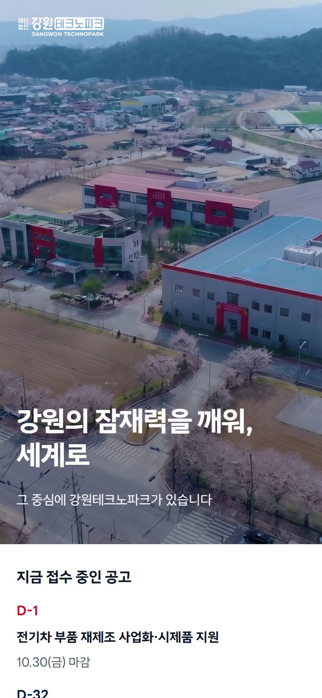
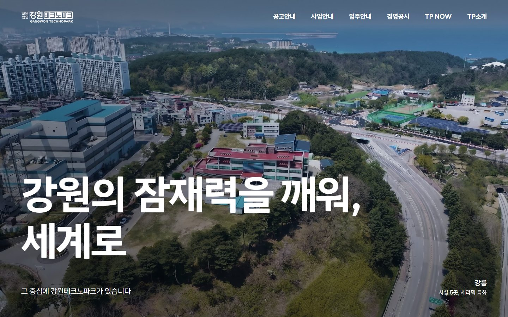
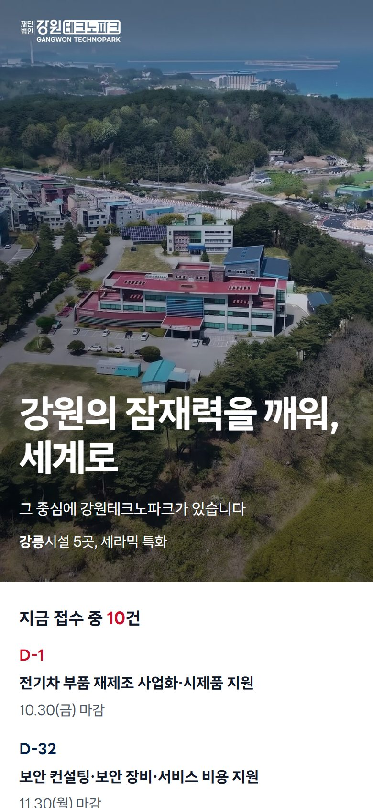
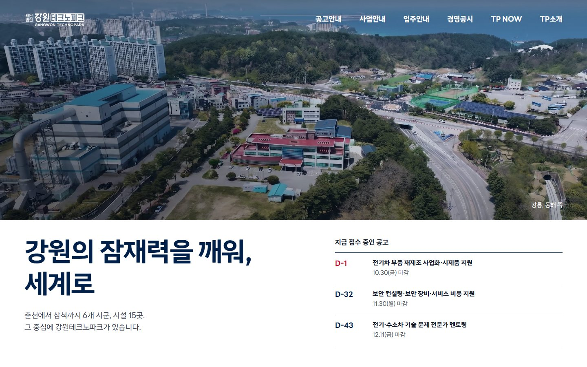
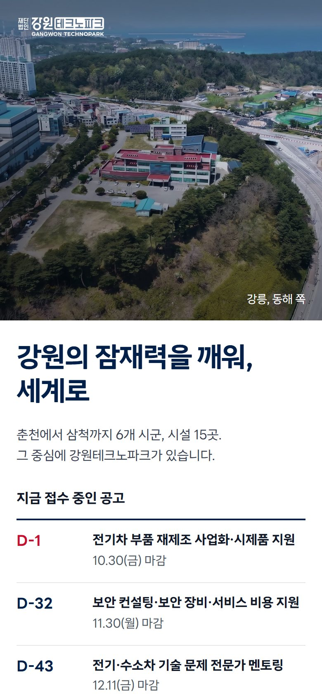
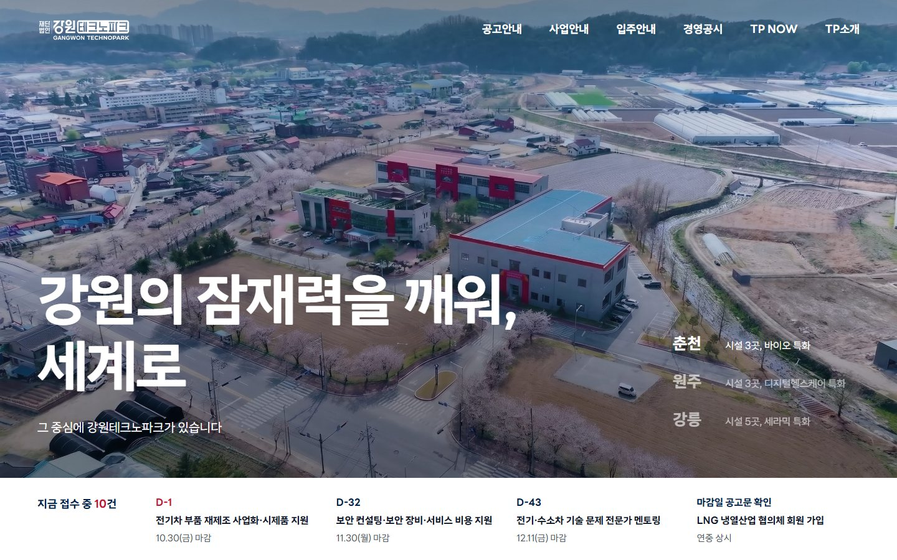
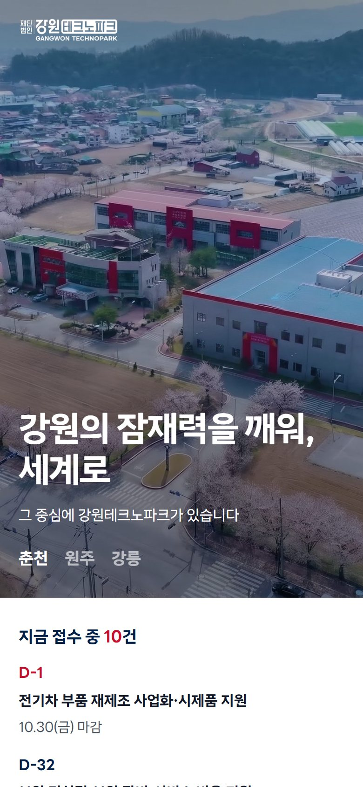
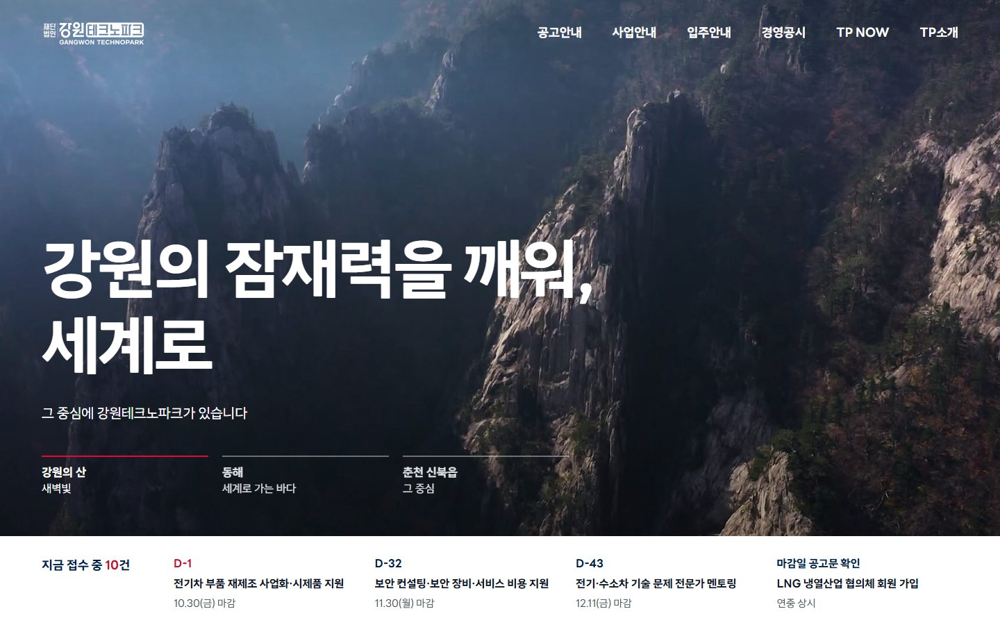
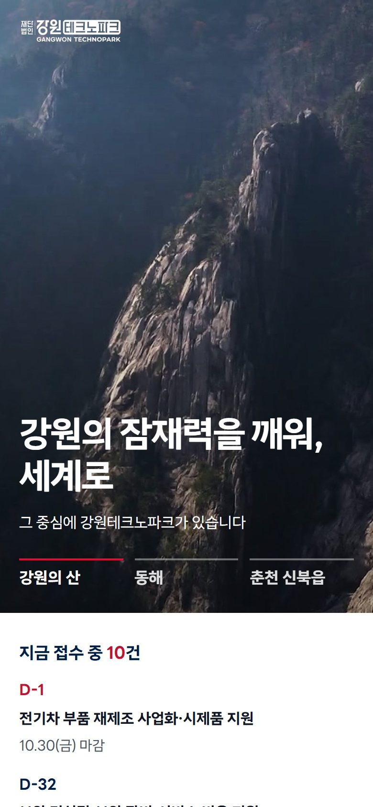
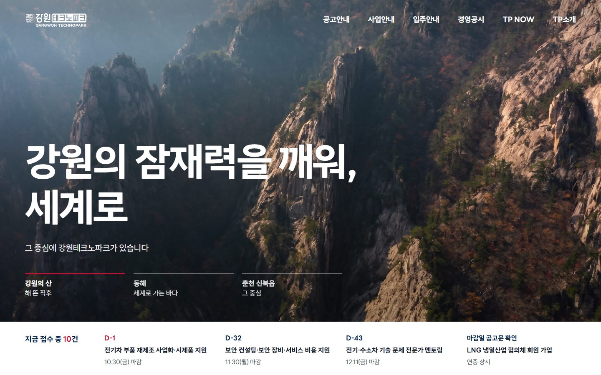
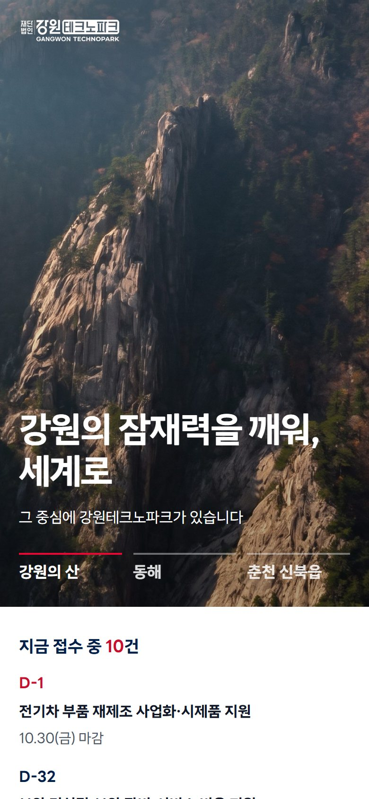
직접 만든 자산
규칙: 해 뜬 직후 낮은 햇빛이 왼쪽에서 능선·지붕을 스치는 빛, 깊고 차가운 청회색 그늘, 낮은 채도(초록은 올리브 쪽), 부드럽고 따뜻한 하이라이트, 먼 곳에만 옅은 대기 — 해·빛 번짐·발광·HDR 없음. 세 장면 모두 이 한 규칙으로 맞춤.
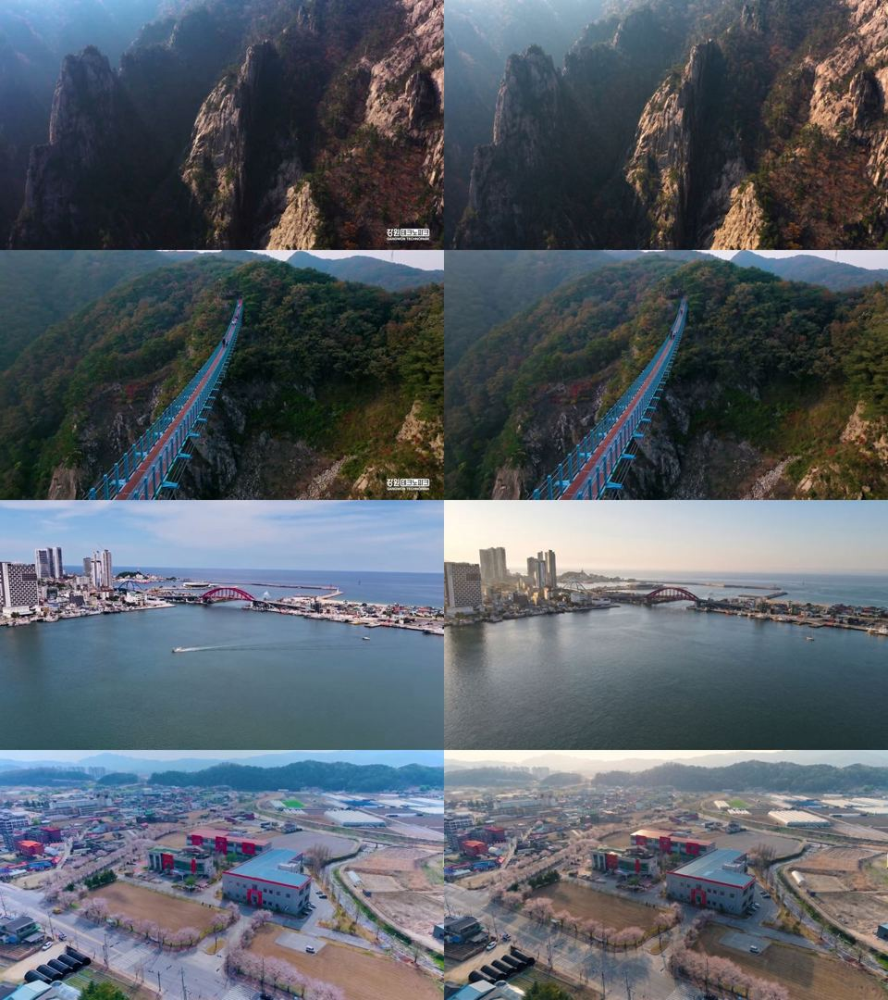
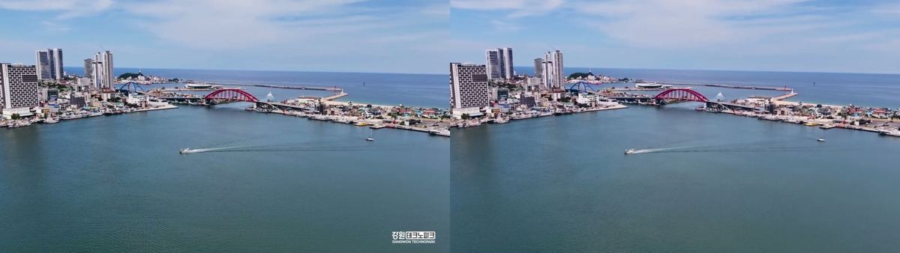

움직임 시제품 10초
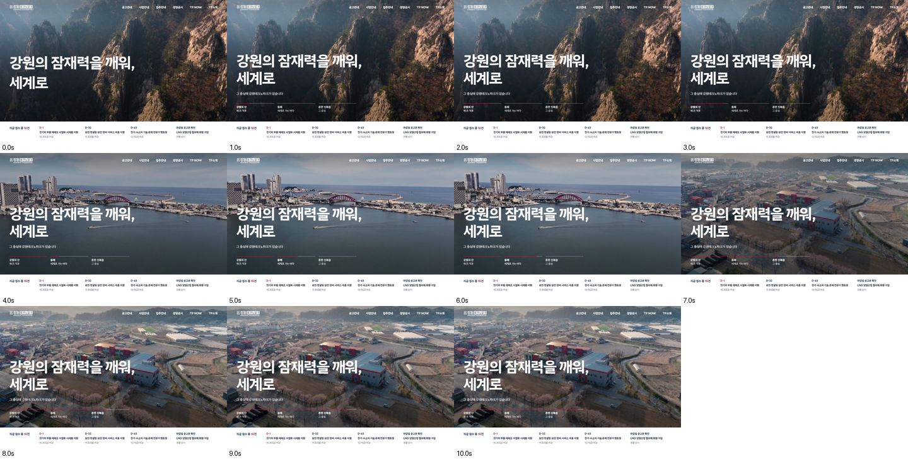
움직인 것 첫 화면 사진 한 장을 10초 이어 보기: 바위산 → 동해 → 춘천 신북읍을 3.4초씩, 1.1초 겹쳐 바꾸고 사진은 아주 천천히 밀기(위치·투명도만), 진행 막대 빨강이 차오름, 제목은 처음 한 번만 아래에서 올라옴
버텼나 m1(코드 보정본)은 장면마다 빛이 달라 덜컹임 → 한 규칙으로 다시 비춘 m2로 해결. m2는 춘천 장면에서 부제·진행 글씨가 지붕 위에서 약해 춘천 사진 아래쪽을 더 눌러 m3에서 해결. 빈 프레임·반쯤 멈춘 글자 없음, 폰 390에서도 세 장면 모두 글자 읽힘. 움직임 줄이기 설정이면 첫 장면에 멈춤
서체와 색
LINE Seed Sans KR Bold 제목
LINE Seed Sans KR Regular 본문
7개 폭 검사 7폭(390·412·768·980·1024·1280·1440) 가로 넘침·글자 가림·콘솔 오류 0건(최종 index.html, 고친 뒤 재검사)
그림 생성 Gemini 5회(약 950원) — 로고 지우기 1, 빛 다시 비추기 4(바다 1장은 보트를 지워서 버림, 능선 다리 1장은 안 씀)
메인 전체 (2단계)
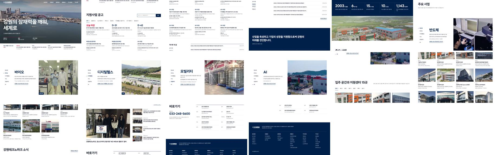
- 강원의 잠재력을 깨워, 세계로 1단계 최종 첫 화면 그대로(바위산·동해·춘천 3장면을 한 빛 규칙으로 다시 비춘 실사) + 바로 아래 신청할 수 있는 공고 4건 띠2026 홍보영상 프레임, GW_NOTICES
- 지원사업 공고 신청할 수 있는 공고 전부(마감 빠른 순, D-day·마감일·분야·지역·부서), 분야 거르기 8칸과 검색, 공고를 누르면 원문 새 탭. 아래에 게시판 새 글(공지사항·모집공고·계약공고·채용공고 5건씩)GW_NOTICES(GW.live·byDeadline·badge·sectorOK), GW_HOME notice/recruit/bid/jobs·boards
- 산업을 육성하고 기업의 성장을 지원함으로써 강원의 미래를 견인합니다. 원장 인사말 한 문장 + 실제 숫자 5개(2003년 설립, 6개 시군, 15곳 시설, 지금 신청할 수 있는 공고 n건, 공동활용 장비 1,143점/29개 기관 2026.10.28 기준) + 단지 항공 실사 띠TP소개 > 인사말, GW_FACILITIES, GW 계산, GW_HOME.eqnet
- 주요 사업 원장 인사말 순서 반도체·바이오·디지털헬스·수소·모빌리티·AI, 분야마다 실제 근거 두 줄과 출처, '신청할 수 있는 ○○ 공고 n건 보기'(누르면 공고 구역이 그 분야로 걸러짐). 넓은 화면은 붙잡아 둔 무대, 폰·데스크톱 보기는 목록2026 홍보영상 1:03·2:17·2:24·2:31, 입주안내 > 시설현황, 언론보도 2026.10.27, GW.sectorOK
- 입주 공간과 지원센터 15곳 시군 거르기(춘천 3·홍천 1·원주 3·강릉 5·태백 1·삼척 2), 보정한 실제 사진·이름·면적·용도, 누르면 오른쪽 판에 위치·면적·규모·보유시설·승강시설·층별 구성(홍천은 원문끼리 층수가 어긋나 규모 줄 뺌)GW_FACILITIES
- 강원테크노파크 소식 대표 1건 큰 사진 + 나머지 4건, 언론보도 전체 보기GW_BASE.news, newsUrl, photo/news-1~5
- 바로가기 대표전화 033-248-5600(누르면 전화)·주소 + 관련 시스템 10곳(분류·이름·주소)GW_BASE.systems·phone·address
- 바닥글 주소·대표전화·실제 메뉴 사이트맵 6묶음 30개·저작권gwtp.or.kr 전체 메뉴(10/29 수집)
디자인을 끝낸 뒤 입힌 움직임
- 머리글 — 첫 화면 위에선 투명, 내리면 숨고(0.3초) 올리면 흰 바탕으로 다시 나옴, 대메뉴에 올리거나 초점이 가면 전체 메뉴 판이 0.25초에 내려옴(위치·투명도만)
- 첫 화면 — 1단계 그대로 — 장면 3개를 3.4초씩 겹쳐 바꾸고 아주 천천히 밀기, 진행 막대 빨강이 차오름, 제목은 처음 한 번만 아래에서 올라옴(1초)
- 주요 사업 붙잡은 무대 — 넓은 화면에서 스크롤 진행률로 분야 6개 전환 — 사진은 0.7초 겹쳐 바꾸기, 글은 기준점을 넘을 때 0.7초 시간 기반으로 올라옴(멈춰도 반쯤 잘린 글자 없음), 왼쪽 분야 이름을 누르면 그 자리로 이동
- 거르기·탭 — 누르면 0.3초 안에 밑줄이 그어지고 목록이 다시 그려지며 위치·투명도 0.3초(항목마다 0.025초 차이)
- 시설 판 — 오른쪽에서 0.3초 미끄러져 들어오고 닫기·바깥 누름·Esc로 0.22초 닫힘, 열린 동안 뒤 스크롤 잠금
- 사진 올림 — 시설·소식 사진에 손을 올리면 0.3초 1.03배
- 공통 — 곡선 cubic-bezier(.16,1,.3,1) 하나, transform·opacity만, transition: all 없음, 움직임 줄이기 설정이면 전부 끄고 무대는 목록으로, 섹션마다 나타나기 효과 없음, 터치는 기본 스크롤
폰에서 끝까지 써 보기
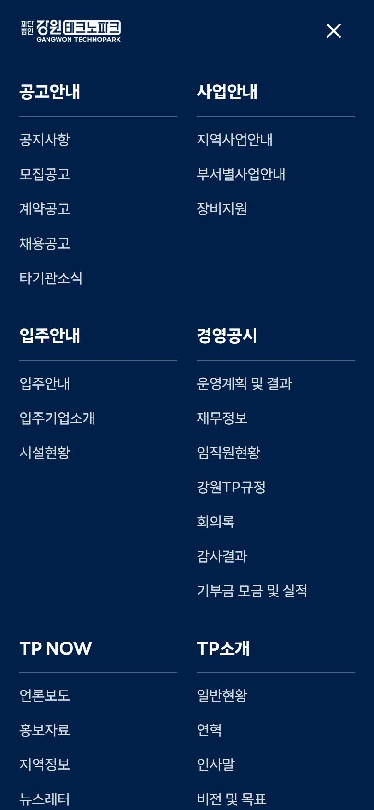
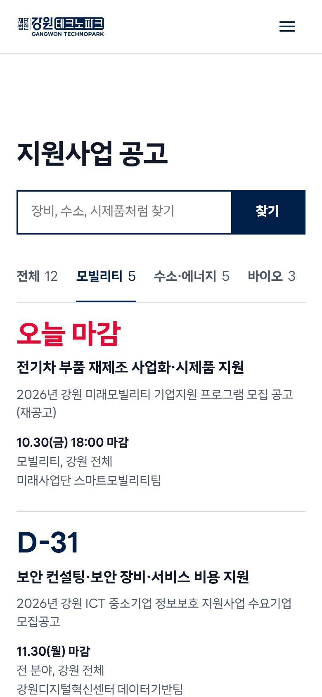
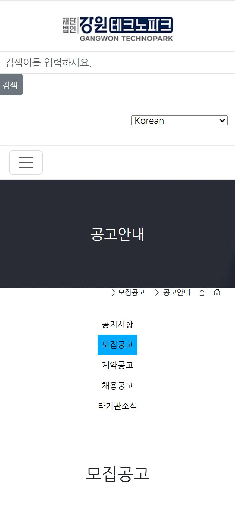

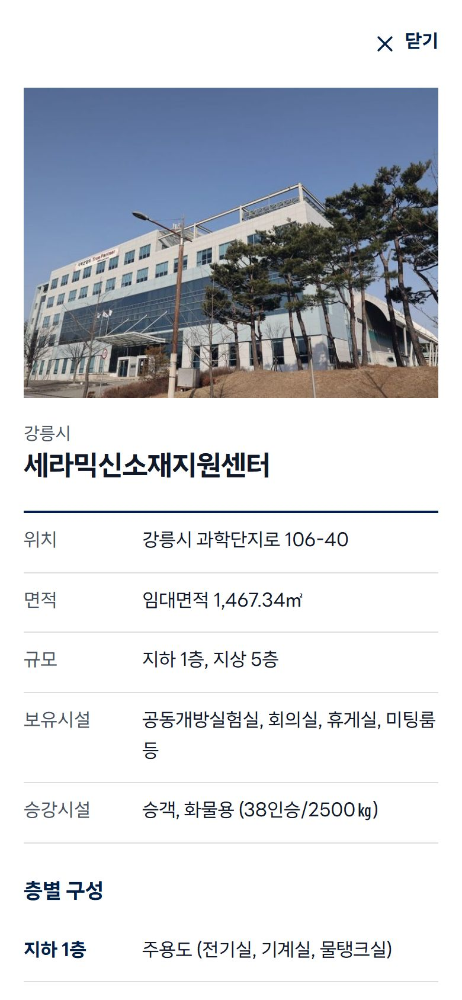
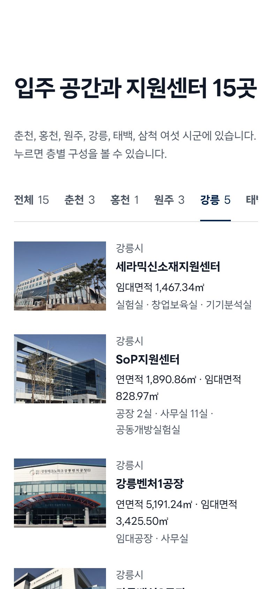
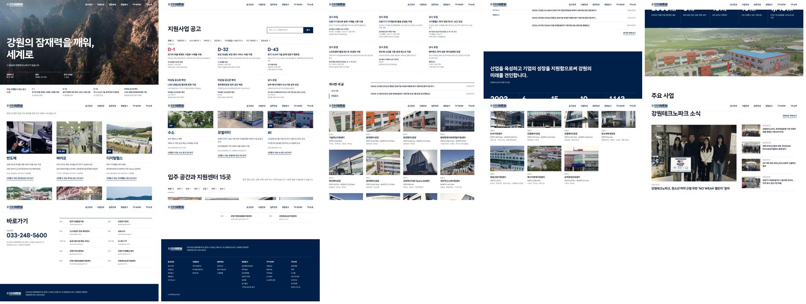
사진 1단계 빛 규칙(해 뜬 직후 낮은 햇빛, 차가운 청회색 그늘, 낮은 채도·초록은 올리브 쪽, 따뜻한 하이라이트)을 PIL+numpy 곡선으로 같은 값으로 입혀 img/에 미리 구움 — 분야 6장, 시설 15장(태백은 홍보영상 프레임에서 잘라 씀), 소식 5장, 단지 띠 1장. 사진 속 글자·로고 없는 컷만, Gemini 생성 0회
7개 폭 검사 7폭(390·412·768·980·1024·1280·1440) 스크롤 전 구간 넘침 0, 가림 0, 작은 글씨 0, 좁은 자간 0, 콘솔 오류 0 (tools/check_main.py 1/main)
금지 목록·수치 금지 목록 해당 없음 — 흰 바탕+남색, 둥근 카드·그림자·그라데이션 없음, 대문자 라벨·고정폭 글씨·버튼 끝 화살표 없음, 목록 구분 가운뎃점은 쉼표로(시설 면적·용도), 측면 색 테두리였던 세로 탭 표시를 밑줄·짧은 선으로 바꿈. 수치: 섹션 사이 PC 150px·폰 120px, 본문 PC 16~17px·폰 15~16px, 자간 최소 -0.025em, 첫 화면 사진 화면 가득, 서체 1개(LINE Seed Sans KR 2굵기), 색 5개(흰·먹·남색·빨강·회색, 선·옅은 바탕은 먹·남색 투명도)
못 한 것 모빌리티 분야 사진은 강원TP 미래차 현장 사진이 없어 장소를 밝히지 않은 제조 설비 실사로 씀(자리 표시 없음)
② 독창형 — 열다섯 곳
강원 여섯 시군, 기업이 일하는 열다섯 곳
다른 테크노파크는 배너를 걸지만 강원TP의 정체는 강원 곳곳에 기업이 들어가 일하는 건물들이다 — 그 건물 열다섯 곳을 서쪽 춘천부터 동쪽 삼척까지 한 거리처럼 세운다(에드 루샤 「Every Building on the Sunset Strip」 1966 처방).
- “춘천 강릉 원주 삼척 태백 홍천”입주안내 > 시설현황 탭(시설 15곳, site/shared/facilities.js)
- “강원 지역 6개 거점, 기업 성장지원을 위한 인프라 조성”2026 홍보영상 1:02
- “NEW 강원테크노파크가 강원특별자치시대의 문을 활짝 열겠습니다!”2026 홍보영상 3:30
최종 첫 화면
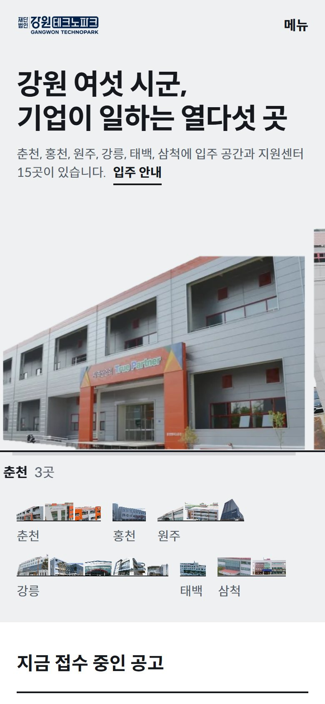
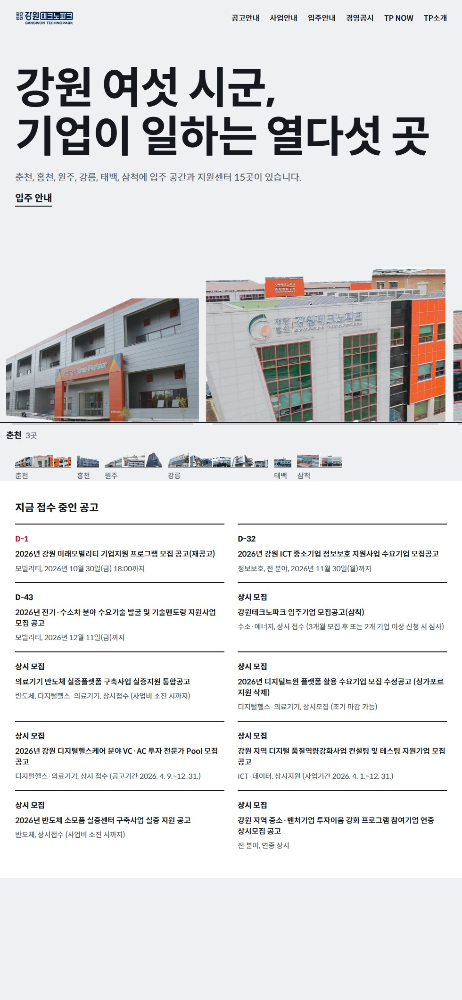
다시 그리기 9번
캡처는 그 버전을 그린 때 화면 그대로입니다. 왼쪽 PC 1440, 오른쪽 폰 390.
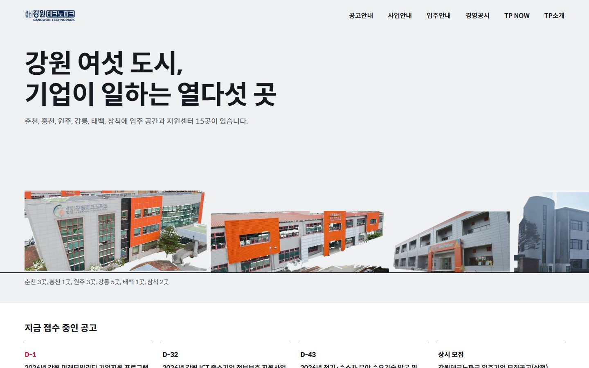
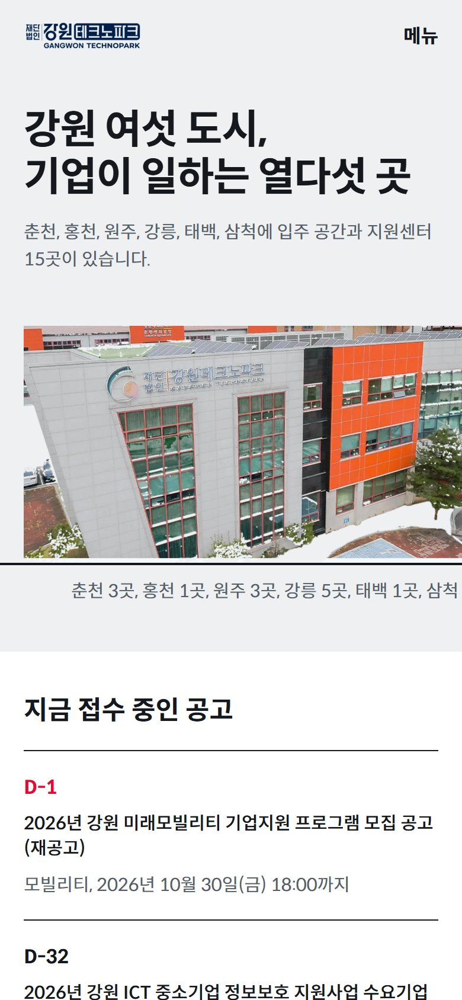
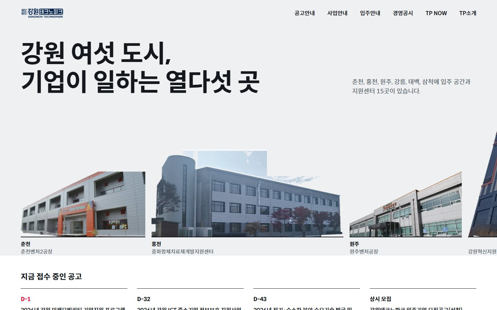
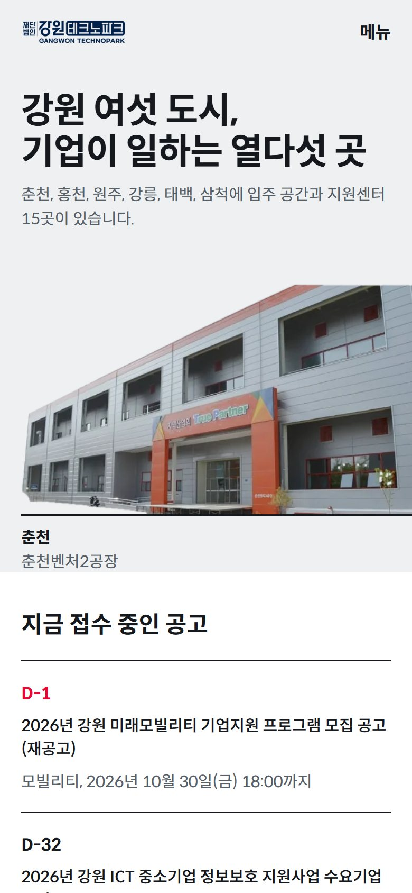
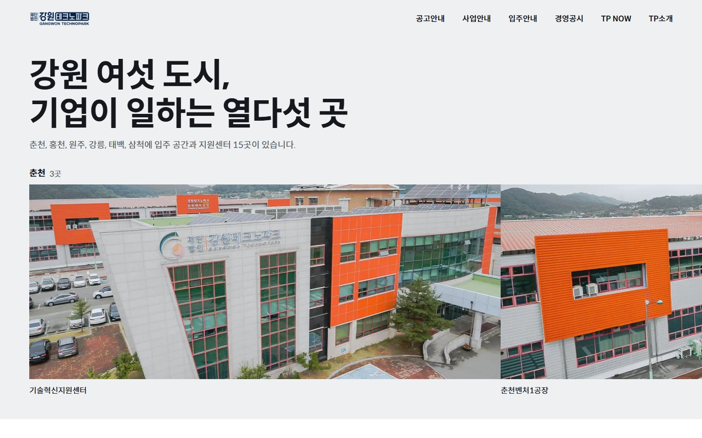
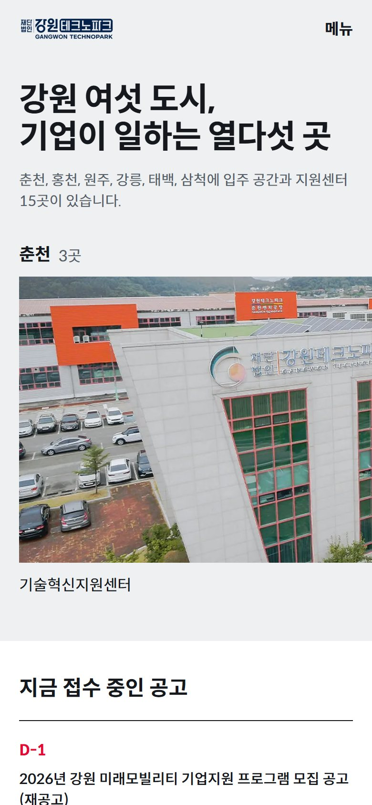
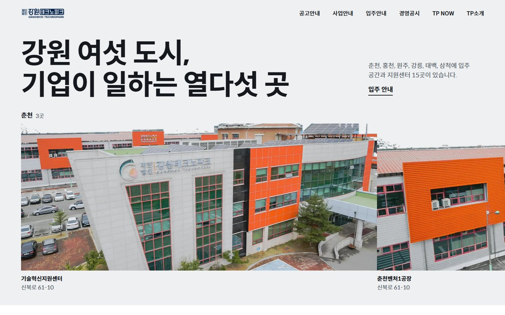
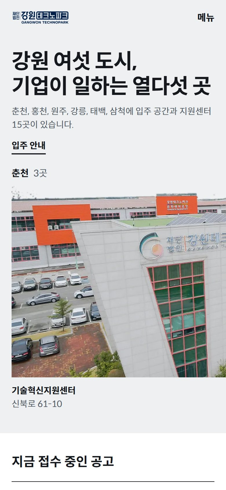
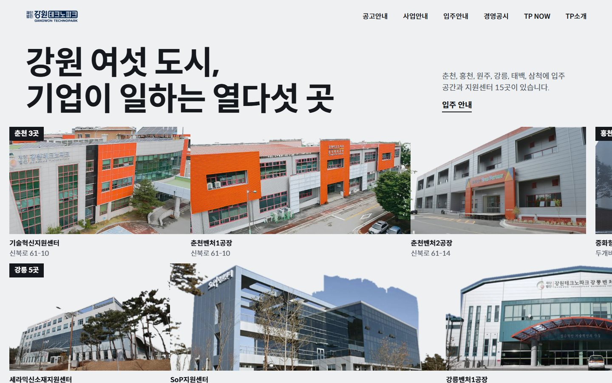
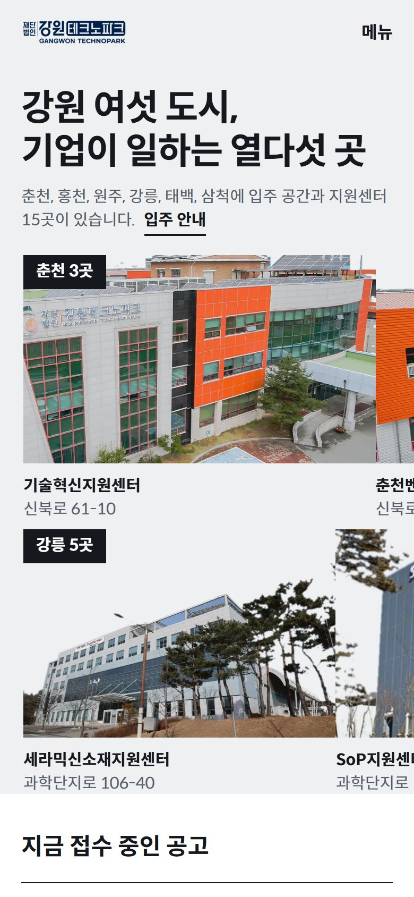
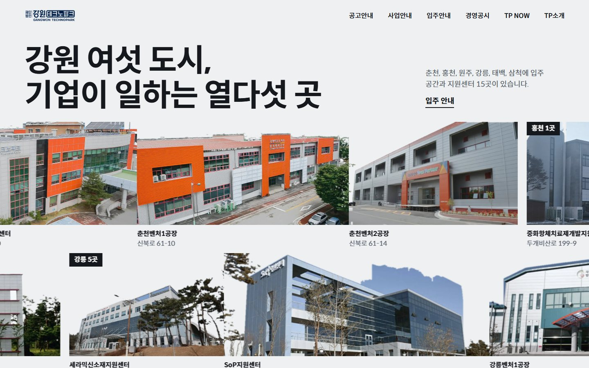
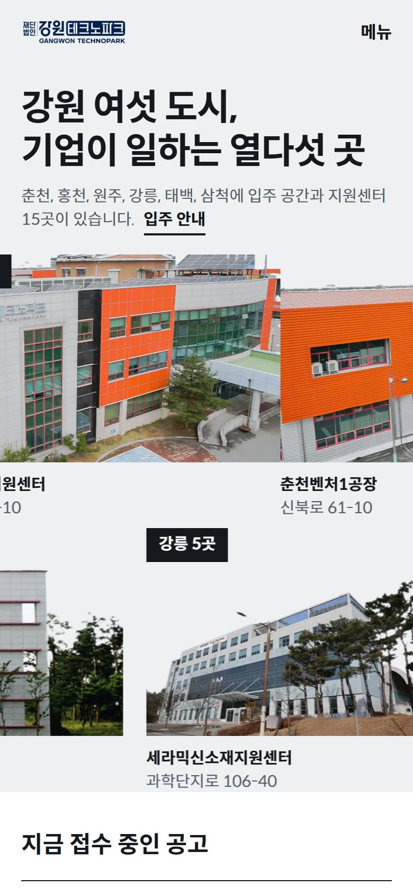

직접 만든 자산
규칙: 오린 자리 한 규칙: 건물 윤곽 안은 전부 불투명(창 구멍 메움)·떨어진 조각 없이 가장 큰 덩어리만·바닥은 외벽 아래 끝에서 수평으로 자름·앞을 가린 나무·차·주차장은 그 부분을 잘라 빼고 건물만. 색은 흐린 날 고른 빛 한 규칙: 같은 노출 곡선·채도 0.72배(강원TP 주황 외벽만 0.95배)·살짝 차가운 색, 바탕 #EEF0F2 위 기준선 2px, 건물마다 같은 그림자 한 줄(6px), 건물 아래 바닥은 기준선에서 끊음


움직임 시제품 10초
움직인 것 거리가 1.2초 동안 오른쪽에서 들어와 자리 잡은 뒤(끝이 느려지는 곡선) 춘천에서 삼척 쪽으로 천천히 흐름(위치만, 같은 거리를 이어 붙여 끊김 없이 반복, 마우스를 올리면 멈춤, 움직임 줄이기 설정이면 정지)
버텼나 버팀 — 10초 동안 제목 가독·빈 프레임·덜컹임 없음. 고친 것: 건물 겹침 제거, 폰에서 기준선 위 빈 띠(건물 높이 상한), 흐름 시작을 1.6초 늦춰 첫 화면이 춘천부터 보이게, 오린 자국(창 구멍·바닥 찌꺼기) 정리 뒤 PC·폰 다시 녹화
서체와 색
Spoqa Han Sans Neo 제목·본문
7개 폭 검사 7폭(390·412·768·980·1024·1280·1440) 가로 넘침 0·글자 가림 0·콘솔 오류 0 (tools/check.py 2)
그림 생성 Gemini 호출 18회(약 3,400원) — 15장 + 다시 3장(cc-hq 주변 남음, gn-semi 지붕 복제, sc-energy 확대·재구성), 버린 결과 3장. 최종 픽셀은 모두 원본 사진(Gemini 결과는 오려 낼 자리 마스크로만 씀)
메인 전체 (2단계)
- 강원 여섯 시군, 기업이 일하는 열다섯 곳 1단계 첫 화면 그대로 — 시설 15곳을 오려 서쪽 춘천부터 동쪽 삼척까지 한 거리로 세움, 건물을 누르면 층별 구성facilities.js, 1단계 오린 건물
- 지금 접수 중인 공고 접수 중·상시·마감일 확인 공고 전부를 마감 빠른 순으로, 분야 거르기와 검색, 공지사항·모집공고·계약공고·채용공고 새 글 5건씩notices.js(GW.live), home-lists.js
- 지역 산업의 거점, 강원테크노파크 선언 한 문장(2026 홍보영상)과 이사장 인사말 한 줄, 실제 숫자 다섯(시설 15곳, 6개 시군, 신청할 수 있는 공고 수, 공동활용 장비 1,143점, 2003년 설립)facilities.js, GW 계산, home-lists.js eqnet, 홍보영상 설립일
- 주요 사업 반도체, 바이오, 디지털헬스, 수소, 모빌리티, AI 여섯 줄 — 분야마다 실제 근거 두 줄, 그 분야 공고 수, 그 분야가 일하는 건물(누르면 층별), 건물이 없는 분야는 열린 공고원장 인사말 순서, 시설현황 특화, 2026 홍보영상 자막, 10/27 보도자료, notices.js
- 입주 시설 15곳 시군별 줄(특화 한 줄 + 오린 건물이 기준선에 섬 + 이름·면적), 시군 거르기, 건물을 누르면 층별 구성 창facilities.js(floors), 시설현황 6권역 특화
- 강원테크노파크 소식 대표 1건 큰 사진 + 4건 목록, 사진은 같은 빛 규칙으로 보정base.js news 5건, photo/news-1~5
- 바로가기 관련 시스템 10곳을 입주·장비·지원사업·정보·분야로 묶음 + 대표전화 크게base.js systems, phone
- 바닥글 주소·대표전화·실제 메뉴 사이트맵(6개 대메뉴, 하위 30개)·저작권base.js address, 홈페이지 메뉴
디자인을 끝낸 뒤 입힌 움직임
- 머리글 — 내려가면 위로 숨고 올라오면 다시 나옴(0.3초, cubic-bezier(.16,1,.3,1), transform만), 맨 위에서는 바탕과 같은 색
- 대메뉴 — 올리거나 포커스하면 실제 2단계 메뉴 판이 0.25초에 내려옴(투명도·위치)
- 첫 화면 거리 — 1.2초 들어온 뒤 150초에 한 바퀴 천천히 흐름, 마우스·포커스가 있으면 멈춤
- 건물 누름 — 올리면 6px 떠오르고 누르면 2px(0.25초), 누르면 층별 구성 창이 0.3초에 올라옴, Esc·바깥·닫기로 닫힘
- 공고 거르기·게시판 탭 — 누르는 즉시 목록이 0.14초 흐려졌다 바뀐 목록으로 0.2초에 돌아옴
- 시군 거르기 — 고른 시군의 건물이 0.35초에 기준선 위로 올라섬
- 움직임 줄이기 설정 — 흐름·전환 모두 끄고 머리글은 고정
폰에서 끝까지 써 보기
사진 소식 사진 5장은 1단계 거리와 같은 '흐린 날 고른 빛' 규칙(같은 노출 곡선, 채도 0.72배, 살짝 차갑게)으로 미리 구워 img/에 둠, 건물은 1단계 오린 건물(원본 픽셀) 재사용
7개 폭 검사 7폭(390·412·768·980·1024·1280·1440) × 스크롤 전 구간 넘침·가림·작은 글씨·좁은 자간·콘솔 오류 0건(움직임을 입힌 뒤 재검사)
금지 목록·수치 금지 목록 해당 없음(둥근 카드·그림자·그라데이션·이모지·아이콘 격자·대문자 라벨·버튼 끝 화살표·섹션 페이드인 없음, 용도 목록의 가운뎃점은 쉼표로 바꿈), 서체 1개(Spoqa Han Sans Neo), 색 5개(#EEF0F2·#FFFFFF·#15181D·#565E6A·#E60934, 빨강은 마감 3일 이내 D-day만), 회색 글자 대비 흰 바탕 6.6:1·회백 바탕 5.9:1, 섹션 사이 PC 240px·폰 160px, 첫 화면 거리가 화면 절반 이상, 제목 두 줄 이내, 본문 PC 17px·폰 16px
못 한 것 보조 글(마감일·부서·면적 같은 정보 줄)은 15px — 본문이 아니라 정보 줄이라 그대로 둠, 드론 시점과 지상 시점 건물 사진이 섞여 있는 1단계 한계는 그대로(같은 시점 실제 촬영이 있어야 해결), 주요 사업 중 모빌리티·AI는 강원TP 15곳 중 그 분야 전용 건물이 없어 건물 대신 열린 공고를 보여 줌
③ 실용형 — 출발 안내판
지금 신청할 수 있는 지원사업
강원TP 홈페이지에 오는 기업의 첫 질문은 '지금 내가 신청할 수 있는 게 뭐냐'다. 그래서 첫 화면이 곧 마감 순 안내판이다.
- “기술개발부터 사업화, 인재 양성, 생태계 조성까지 기업 성장의 전 주기를 밀착 지원하겠습니다.”TP소개 > 인사말(이사장)
- “공고안내(공지사항, 모집공고, 계약공고, 채용공고, 타기관소식)”홈페이지 메뉴 6개 중 첫 칸 — 기관이 스스로 가장 앞에 둔 일
- “모집공고 목록에 마감일 칸이 없고, 공지 고정 15건 중 11건은 본문이 그림”공고안내 > 모집공고 게시판 실측(10/28)
- “공고 탭의 날짜를 큰 숫자(27, 20)로 보여 줌”비슷한 기관 충북테크노파크 첫 화면(10/29 캡처)
최종 첫 화면
다시 그리기 6번
캡처는 그 버전을 그린 때 화면 그대로입니다. 왼쪽 PC 1440, 오른쪽 폰 390.
직접 만든 자산
규칙: 아이콘 = 24 격자, 선 굵기 1.75, 둥근 끝·둥근 꺾임 한 규칙, 채움 없음. 숫자 조각 = 평평한 무광 흰 조각에 남색 숫자, 가운데 1px 틈, 모서리 4px, 마감 3일 이내만 빨강 조각.
움직임 시제품 10초
움직인 것 판이 열릴 때 숫자 조각이 차례로 넘어가 마감 순으로 서고(1.5초 안), 3.6초에 '수소'를 누르면 맞는 5줄로 다시 넘어가고, 6.9초에 '전체'로 돌아옴
버텼나 버팀 — 1초 간격 시트에서 멈춘 프레임에 반쯤 넘어간 조각 없음, 넘김 도중(7.0초)에 흰 빈 조각이 잠깐 보이는 건 넘김판 정상 범위. 한 칸 0.15초·줄마다 0.055초 지연으로 누른 뒤 0.3초 안에 반응 시작, 1.2초 안에 끝. 움직임 줄이기 설정이면 넘기지 않고 바로 표시. 고친 것: 조각을 누르기 대상에서 빼고(줄 전체가 링크), 폰 거르기를 4×2 격자 대신 한 줄 가로 띠로(아이콘 카드 격자로 읽히지 않게) 바꾼 뒤 폰 녹화 다시 뜸
서체와 색
Pretendard 제목·본문·숫자(tabular-nums)
7개 폭 검사 7폭(390·412·768·980·1024·1280·1440) 가로 넘침 0, 글자 가림 0, 콘솔 오류 0 (tools/check.py 3, 폰 거르기 한 줄 띠로 바꾼 뒤 재확인)
그림 생성 Gemini 0회(0원) — 아이콘·넘김 조각 모두 코드로 직접 그림
메인 전체 (2단계)
- 지금 신청할 수 있는 지원사업 1단계 첫 화면(왼쪽 안내 칸 + 남색 판)을 그대로 두고 판을 이어 접수 중·상시·마감일 확인 공고 12건 전부를 마감 순 넘김 조각으로, 분야 거르기·검색 작동, 왼쪽 안내 칸은 판을 따라 붙어 있음GW_NOTICES(GW.live·status·dday), GW_HOME.eqnet
- 게시판 새 글 같은 남색 판 안에서 공지사항·모집공고·계약공고·채용공고 탭, 탭마다 실제 최신 5건과 게시판 전체 보기GW_HOME.notice·recruit·bid·jobs·boards
- 기업 성장의 전 주기를 밀착 지원하겠습니다 이사장 인사말 문장 + 넘김 조각 숫자 다섯(입주 시설 15, 시군 6, 접수 중 공고 n, 공동활용 장비 1,143, 설립 2003)TP소개 인사말, GW_FACILITIES, GW 계산, GW_HOME.eqnet(29개 기관, 2026-10-28), 설립일 2003.12.22
- 주요 사업 분야 원장 인사말 순서 여섯 분야를 한 줄씩(그린 아이콘, 근거 사업 한 줄, 그 분야 공고 수 넘김 조각) — 누르면 판으로 올라가 그 분야로 걸러짐원장 인사말, 2026 홍보영상, 10/27 보도자료, GW_NOTICES sectors
- 입주 시설 15곳 시군 6칸(춘천 3·강릉 5·원주 3·삼척 2·태백 1·홍천 1) 고르기 → 보정한 실제 사진, 이름, 주소, 용도, 면적·규모, 누르면 층별 구성과 기타·승강 시설이 열리고 닫힘(홍천은 층수 글자 안 씀)GW_FACILITIES
- 강원TP 소식 대표 1건 큰 사진 + 나머지 4건 목록, 언론보도 전체 보기GW_BASE.news·newsUrl, shared/photo news-1~5
- 바로가기 관련 시스템 10곳(분류 표시) + 대표전화·주소GW_BASE.systems·address·phone
- 바닥글 흰 로고, 실제 2단계 메뉴 사이트맵 6갈래, 주소, 대표전화, 저작권강원TP 홈 메뉴(10/29 수집), GW_BASE.address
디자인을 끝낸 뒤 입힌 움직임
- 머리글 — 내려가면 위로 숨고 올라오면 다시 나옴 — transform 0.3초 cubic-bezier(.16,1,.3,1)
- 대메뉴 판 — 대메뉴에 올리거나 초점이 가면 실제 2단계 메뉴 판이 opacity·translateY 0.25초로 열림, Esc·벗어나면 닫힘
- 공고 판 넘김 조각 — 처음 열 때와 분야·검색을 바꿀 때 숫자 조각이 한 칸 0.15초로 넘어가 마감 순으로 섬(줄마다 0.055초 차이), 누른 뒤 0.3초 안에 시작
- 숫자 다섯 — 구역이 절반 보이면 한 번만 끝값에서 두 칸 넘겼다가 끝값으로 돌아옴(정지 화면은 끝값 15, 6, 3, 1,143, 2003)
- 분야 줄의 공고 보기 — 판 위치로 부드럽게 올라간 뒤 그 분야로 거르고 조각이 다시 넘어감
- 탭·시군 바꾸기, 층별 펼치기 — 새 내용이 opacity와 8px 위치만 0.3초로 들어옴(높이는 애니메이션하지 않음)
- 누름·올림 — 분야 칸·공고 보기 누름 scale .96~.98 0.15초, 소식 사진 올림 scale 1.03 0.3초 — 색 바뀜은 전환 없이 즉시
- 움직임 줄이기 설정 — CSS 전환·애니메이션 전부 끄고, 넘김 조각은 바로 끝값으로
폰에서 끝까지 써 보기
사진 시설 14장(+태백은 2026 영상 프레임에서 자막 지운 항공 사진을 건물 쪽으로 자름)과 소식 5장을 같은 보정으로 미리 구움 — 채도 0.8, 대비 1.05, 붉은 기 2.5% 낮추고 푸른 기 3% 올림, 시설 4:3 640×480·소식 16:10/4:3
7개 폭 검사 7폭(390·412·768·980·1024·1280·1440) 스크롤 전 구간 넘침·가림·작은 글씨·좁은 자간·콘솔 오류 0건(tools/check_main.py 3/main)
금지 목록·수치 크림·세리프·테라코타 없음, 검정+형광 없음(남색·흰색·연회색·먹·빨강 5색, 빨강은 D-3 이내만), 둥근 카드·그림자 반복 없음(대메뉴 판 그림자 하나), 대문자 라벨·가운뎃점 나열·고정폭·버튼 끝 화살표 없음(공고 제목 속 낱말 가운뎃점은 원문 그대로), 그라데이션·유리·측면 테두리·순서 없는 번호·이모지·아이콘 카드 격자·섹션 페이드인 없음, 서체 Pretendard 하나, 자간 -0.02em까지, 섹션 사이 PC 160px·폰 120px, 첫 화면 판이 화면 폭 3분의 2, 제목 두 줄 이내, 본문 PC 16~18px·폰 15px 이상